|
|
Civiliza��o
Maia
por Isis
Mayara Rodrigues da Silva
Os Maias, das tr�s
grandes civiliza��es pr�-colombianas (antes de Colombo), s�o os mais
misteriosos e provavelmente os mais antigos. A cultura maia estava
em decl�nio quando os europeus chegaram �s Am�ricas, devido � causas
ainda n�o totalmente certas, talvez devido a sucessivas guerras ou �
agricultura baseada em queimadas que teriam empobrecido o solo e
estagnado a economia.

Chich�n
Itz�
Desenvolveram o
melhor calend�rio dentre os povos antigos. Na verdade trata-se de
v�rios calend�rios conjugados que registravam os fatos de maior
vulto de sua hist�ria. Gravados no interior de seus
templos-pir�mide, cada acontecimento digno de nota recebia uma
estrela comemorativa. A pir�mide retratada acima, � um gigantesco
calend�rio, com uma escadaria de 91 degraus de cada lado, somavam-se
364, mais o patamar superior, 365, os dias do ano solar, isso
impressionou muito os europeus, pois mesmo sem o conhecimento do
telesc�pio tinham grande conhecimento dos astros.

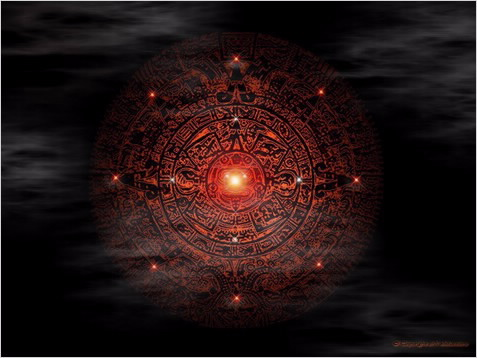
*O
calend�rio mais conhecido da Civiliza��o
Maia.
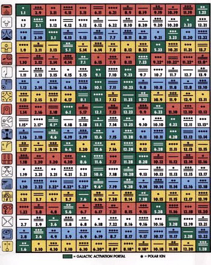
*Tzolkin
Sagrado
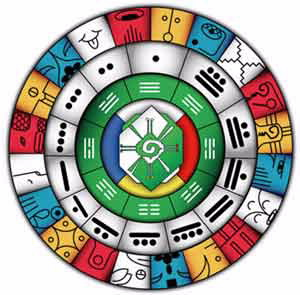
*Sincron�rio da
Paz
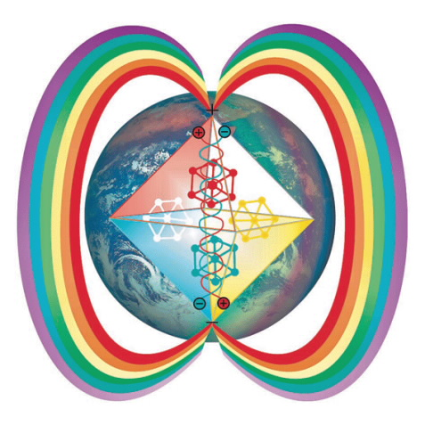
*Calend�rio da Paz.
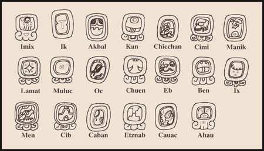
*Os meses do calend�rio
Maia
Se no Egito antigo
suas pir�mides eram destinadas a servir de t�mulo de um soberano,
entre os maias eram destinadas a servirem de observat�rios
astron�micos, apenas os sacerdotes, depois de um ritual de
purifica��o podiam subir nesses templos-observat�rios. Contudo, em
1952 Ruz Lhuillier descobriu na "Pir�mide das Inscri��es", uma
escada em forma de caracol no piso que estava completamente
obstru�da por terra e pedras, depois de tr�s anos de escava��es para
desobstruir o caminho, chegou a uma c�mara mortu�ria com um
sarc�fago coletivo com seis corpos com detalhes de rituais bastante
semelhantes aos do Egito, o que leva arque�logos a aventarem a
hip�tese de algum aventureiro eg�pcio que teria chegado e ganhado o
respeito dos nativos do local.
Os historiadores dividem
freq�entemente a hist�ria maia em dois per�odos:
Antigo
Imp�rio: abrange de 500 a.C. at� 600 d.C.
Novo
Imp�rio: abrange de 600 d.C. at� a invas�o
espanhola.
Governo Maia
No per�odo de apogeu da
civiliza��o maia, � muito prov�vel que as cidades
maias tivessem
sido sociedades teocr�ticas e pac�ficas. As guerras que ocorriam na
maioria delas eram para obterem prisioneiros para serem sacrificados
aos deuses.
Economia Maia
A base econ�mica dos
maias era a agricultura, principalmente do milho, praticada com a
ajuda da irriga��o, utilizando t�cnicas rudimentares, o que
contribuiu para a destrui��o de florestas tropicas nas regi�es onde
habitavam,
Como unidade de troca,
utilizavam sementes de cacau e sinetas de cobre, material que
empregavam tamb�m para trabalhos ornamentais, ao lado do ouro, da
prata, do jade, das conchas do mar e das plumas coloridas.
Entretanto, desconheciam as ferramentas
met�licas.
Atividades agr�colas e
comerciais
Os maias cultivavam o milho (tr�s esp�cies),
algod�o, tomate, cacau, batata e frutas. Domesticaram o peru e a
abelha que serviam para enriquecer sua dieta, � qual somavam tamb�m
a ca�a e a pesca.
� importante observar que por serem os
recursos naturais escassos n�o lhes garantindo o excedente que
necessitavam a tend�ncia foi desenvolverem t�cnicas agr�colas, como
terra�os, por exemplo, para vencer a eros�o.Os p�ntanos foram
drenados para se obter condi��es adequadas ao plantio.
Ao lado
desses progressos t�cnicos, observamos que o cultivo de milho se
prendia ao uso das queimadas. Durante os meses da seca, limpavam o
terreno, deixando apenas as �rvores mais frondosas. Em seguida,
ateavam fogo para limp�-lo deixando o campo em condi��es de ser
semeado. Com um bast�o faziam buracos onde se colocavam as sementes.
Dada a forma com que era realizado o cultivo a produ��o se
mantinha por apenas dois ou tr�s anos consecutivos. Com o desgaste
certo do solo, o agricultor era obrigado a procurar novas terras.
Ainda hoje a t�cnica da queimada, apesar de prejudicar o solo, �
utilizada em diversas regi�es do continente americano.
As
Terras Baixas concentraram uma popula��o densa em �reas pouco
f�rteis. Com produ��o pequena para as necessidades da popula��o, foi
necess�rio n�o apenas inovar em termos de t�cnicas agr�colas, como
tamb�m importar de outras regi�es produtos como o milho, por
exemplo.
Mapa do Imp�rio Maia � Ontem e
Hoje
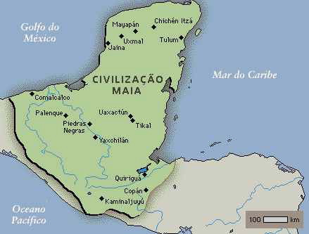
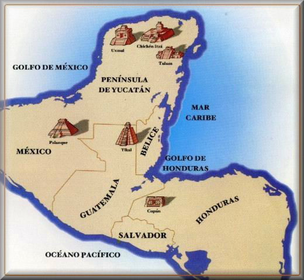
*Mapa Atual do
antigo territ�rio Maia
A civiliza��o maia
estendeu-se por toda a pen�nsula mexicana de Yucatan e zonas do que
hoje � a Guatemala, Honduras, El Salvador e Belize. Em todas estas
regi�es descobriram-se ru�nas de cidades maias, que s�o uma mostra
da habilidade e capacidade art�stica de seus
arquitetos.
Sociedade Maia
Rigidamente dividida em
tr�s classes �s quais o indiv�duo pertencia desde o nascimento.
Primeiro, a fam�lia real, incluindo ocupantes dos principais posto
do governo e os comerciantes; em seguida, servidores do Estado, como
dirigentes das cerim�nias e respons�veis pela defesa e cobran�a de
impostos, na camada mais baixa,os bra�ais e
agricultores.
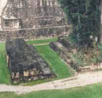
Os antigos maias jogavam
um jogo sumamente cerimonial com uma pesada bola de borracha, do
tamanho aproximado de uma bola de basquete. As regras exatas do jogo
n�o s�o conhecidas, mas pequenos times de um a quatro jogadores
tentavam atingir marcadores ou aros com a bola, sem usarem as m�os.
No final de uma batalha militar, os prisioneiros eram for�ados a
jogar uns contra os outros, em um jogo sem vencedores. Os perdedores
eram torturados e executados, enquanto aqueles que n�o eram mortos
tornavam-se escravos. Algumas pinturas maias retratam cabe�as
decapitadas colocadas no campo de jogo, substituindo a bola de
borracha. Este campo no lado ao sul do Templo I � um de tr�s em
Tikal e o menor conhecido na regi�o maia.
Religi�o Maia
Os deuses maias possu�am
uma natureza antropomorfa, fitomorfa, zoomorfa e astral. A figura
mais importante do pante�o maia � Itzamn�, deus criador, senhor do
fogo e do cora��o. Representa a morte e o renascimento da vida na
natureza. Itzamn� � vinculado ao deus Sol, Kinich Ahau, e � deusa
Lua, Ixchel, representada como uma velha mulher demon�aca. Alguns
pesquisadores acreditam que seu nome deriva das palavras com as
quais supostamente se definiu ante os homens: "Itz en Caan, itz en
muyal" ("Sou o orvalho do c�u, sou o orvalho das nuvens"). Por�m,
tamb�m parece significar 'Casa da Iguana'.
Segundo esta
id�ia, haveria quatro Itzamn�s, correspondentes �s quatro dire��es
do Universo. Quatro g�nios ou divindades, os Bacabs, por outro lado,
aparecem sustentando o c�u, identificados com os quatro pontos
cardeais, que por sua vez est�o associados a quatro cores simb�licas
(Leste, vermelho; Norte, branco; Oeste, preto; Sul, amarelo), uma
�rvore (a seiva sagrada) e uma ave. Segundo a vers�o de alguns povos
maias, seria filho de Hunab Ku, ser supremo e todo-poderoso.
Chac, que se destacava pelo nariz comprido, ocupava o lugar
de deus da chuva e costumava aparecer multiplicado em chacs,
divindades que produzem a chuva esvaziando suas caba�as e jogando
machados de pedra. As uo (r�s) s�o suas companheiras e agem
anunciando a chuva. O jovem deus do milho, Ah Mun estava relacionado
com a vegeta��o e com o alimento b�sico; freq�entemente brigava com
o deus da morte, Ah Puch, Senhor do nono inferno. Outras divindades
associadas �s trevas e � morte s�o Ek Chuah, deus negro da guerra,
dos mercadores e das planta��es de cacau, e tamb�m Ixtab, deusa dos
suic�dios.
A semelhan�a e os contatos entre a cultura maia e
a asteca explicam a apari��o entre os maias da Serpente Emplumada
(Quetzalcoatl), que recebe o nome de Kukulcan em Yucat�n e de
Gucumatz nas terras altas da Guatemala.
Arte e Arquitetura
Maia
Forma de express�o
social, pol�tica e ideol�gica de um dos povos pr�-colombianos mais
desenvolvidos. Durante mais de 2 mil anos, os maias utilizaram, em
suas constru��es, variados materiais e t�cnicas. Como conseq��ncia,
a escultura destes povos acompanhou o desenvolvimento arquitet�nico
e alcan�ou um grau de sofistica��o n�o encontrado entre os demais
povos da Am�rica. A arquitetura maia tem car�ter cerimonial, o que
proporcionou o surgimento de estruturas suntuosas. As grandes
plataformas eram feitas de pedras. As paredes, de terra batida e,
depois, revestidas por pedra talhada ou argamassa. Os tetos tinham
forma de falsa ab�bada. Os exteriores de pal�cios e pir�mides
apresentavam esculturas em suas decora��es.
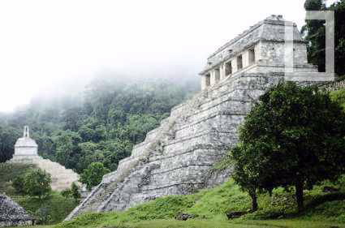
No que restou das
cidades maias, os arque�logos encontraram vest�gios de observat�rios
astron�micos � entre os quais o mais importante � o El caracol, na
cidade de Chich�n Itz� �, pra�as de recrea��o, espa�os para jogos de
bola e uma bem elaborada infra-estrutura urbana. Nas esculturas, em
estilo naturalista, chama aten��o a profus�o de elementos que se
harmonizam com surpreendente senso de propor��o. A serpente � a
representa��o mais encontrada em ru�nas de pal�cios, est�dios e
pir�mides.
A arte maia tem suas ra�zes na cultura olmeca
(1200-400
a.C.) e, posteriormente, recebeu influ�ncias
da arte de Teotihuac�n e Tula.
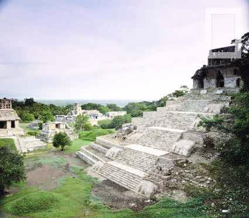
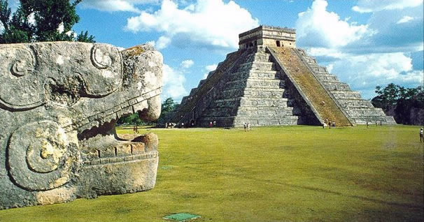
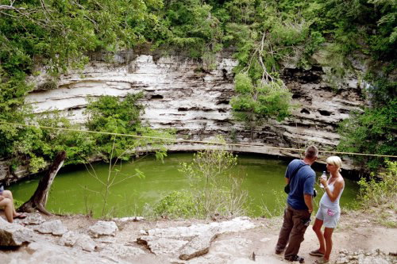
*Cenote Sagrado de Chich�n Itz�
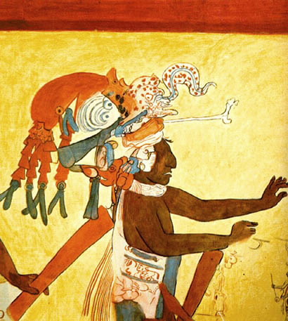
*Representa��o
dos festejos maias. Arte maia. Museu Nacional de Antropologia,
M�xico.
Decl�nio-Vit�ria sobre
ru�nas
Em 1523, quando os
espanh�is chegaram � pen�nsula de Yucatan, o imp�rio maia era apenas
uma sombra do que fora outrora.
Os maias j� se
encontravam em decad�ncia na �poca do embate. Mesmo assim, os
europeus traziam outro trunfo nas caravelas: os cavalos. Os cavalos
eram poucos, mas cobertos de arreios de guerra semeava, o terror
entre o povo.
Os maias de Yucatan
resistiram at� 1546. Logo ap�s, foram submetidos ao trabalho
for�ado, perderam gradativamente sua identidade cultural e a
popula��o primitiva foi praticamente destru�da.
Inimigos
invis�veis
Al�m do poderio b�lico,
os conquistadores contaram com aliados inesperados: os v�rus e as
bact�rias. Os europeus trouxeram v�rias cepas de doen�as, como;
var�ola, t�tano, enfermidades pulmonares, intestinais e
outras.
O sistema imunol�gico
dos nativos que sobreviveram �s balas n�o resistiu � var�ola, a
primeira epidemia a parecer.
Mist�rio Maia - Cr�nio
de Cristal
Pouco
depois de ser descoberto em 1927 em Lubaantun, Honduras Brit�nicas,
tornou-se conhecido como o Cr�nio do Destino, e sucessivos relatos
relacionaram-no com varias mortes inexplic�veis. Para os
observadores cient�ficos, o mist�rio essencial do cr�nio e de
car�ter log�stico: como apareceu ele no templo maia de 1000 anos de
idade onde foi encontrado? Esculpida numa pe�a �nica de raro cristal
de quartzo, a cabe�a (que apresenta 13 cm de altura e um peso
superior a 5
kg) parece uma realiza��o imposs�vel para os
Maias desaparecidos. Prismas ocultos na base e lentes polidas � m�o
inseridas nos olhos combinam-se para produzir uma luminesc�ncia
ofuscante.
No entanto, os investigadores n�o descobriram
quaisquer provas de que o cr�nio tivesse sido executado com
utens�lios modernos. De fato, a estrutura cristalina do cr�nio n�o
foi respeitada quanto a cria��o do mesmo, o que elimina a hip�tese
de interven��o de qualquer lapid�rio moderno. Ser� o cr�nio uma
fraude ou uma prova de que a tecnologia maia estava
consideravelmente mais avan�ada do que geralmente se sup�e? Como
muitas anomalias, o cr�nio suscita mais perguntas do que
respostas.
Destrui��o Maia
A civiliza��o Maia,
quando sofreu a invas�o espanhola, j� estava em decad�ncia por
diversos motivo discutido entre historiadores. Iremos trabalh�-los
agora. Um dos problemas que levou a degrada��o das cidades Maias
defendido aqui � a agricultura.
Com modo de produ��o
tribut�rio, era necess�rio retirar da terra o alimento para o
sustento e manuten��o da classe-Estado. Tendo em vista que o solo da
plan�cie do Yucatan era pobre foi necess�rio aplicar uma
rotatividade de plantios, para possibilitar o descanso da terra. O
problema que a� encontramos foi o grande crescimento populacional.
A exig�ncia de novas terras para cultivar, no Novo Imp�rio,
provocou a crise do sistema e a guerra, como forma de estender o
controle das cidades sobre um territ�rio maior. Com a guerra entre
as cidades-Estado a civiliza��o Maia entrou em decad�ncia.
Segundo alguns houve outros fatos que s�
pioraram a situa��o da popula��o al�m das guerras como terremotos e
pestes, mas estes fatos usados para explicar a decad�ncia giram em
torno do aqui demonstrado: a falta de terras para o cultivo. Assim a
domina��o espanhola foi facilitada pela decad�ncia das cidades
Maias, que j� estavam abaladas.
|